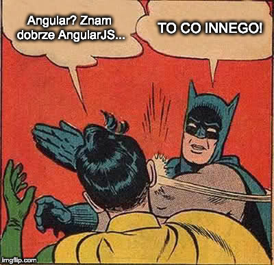

Angular
nowoczesny framework
Poznajmy się
0. Zanim zaczniemy


- Node.js - środowisko uruchomieniowe JS-a; uruchomienie JS-a poza przeglądarką
- npm - Node Package Manager; narzędzie do pobierania zależności z npmjs.com



1. Start!
-
Globalna instalacja narzędzia:
npm i -g @angular/cli -
Użycie:
ng new warsawjs-workshop-29-movies- Wybieramy domyślne opcje (enter, enter)
Kilka wyjaśnień
- CLI = Command Line Interface
- Generator aplikacji
- Dociąga wiele narzędzi
- Konfiguruje jak trzeba
- Opakowuje w prostsze mechanizmy
- Tworzy zgodnie z najlepszymi praktykami i zaleceniami
- Workspace, projekty
2. Uruchomienie!
- Możemy odpalać używając poleceń
ng, np.ng serve - Możemy odpalać skryptami z package.json
- Zmodyfikować skrypt
startz package.json - dopisać opcję--open - Uruchomić aplikację z konsoli:
npm start
Kilka wyjaśnień
- CLI używa narzędzi webpack oraz TypeScript
- Webpack analizuje wszystkie pliki i buduje z nich pliki wynikowe
- Możliwe do uruchomienia w przeglądarce
- Narzędzie
webpack-dev-serveruruchamia apkę i reaguje na zmiany w kodzie - Analiza plików .ts? Użycie TypeScripta!

3. Komponent!
- W pliku app.component.html podmienić "Welcome to" na "Witaj w"
- Zobaczyć przeglądarkę
- W pliku app.component.ts zmienić wartość pola
titlena "WarsawJS-Movies" - Co się zmieniło w przeglądarce?
Kilka wyjaśnień
- Komponenty budują naszą aplikację
- Łączą kawałek HTML-a z JavaScriptem i CSS-em
- Widzisz to połączenie?
- To, co jest w
AppComponent(plik app.component.ts), można "osadzić" w HTML-u (app.component.html)
4. Więcej!
- W app.component.ts dopisać pod linijką z
title:test = 'nowości'; - Czy coś się zmieniło w przeglądarce?
- W pliku app.component.html dodać
{{test}}np. zamiast linijki z img - Co się zmieniło w przeglądarce?
- W app.component.ts dopisać:
onClick() { alert('Klik, klik!'); } - W app.component.html zmodyfikować
<h1>:<h1 (click)="onClick()"> - Bonus: w app.component.css dodać:
h1 { cursor: pointer; }
TypeScript
- "Nadzbiór" języka JavaScript
- Dodaje statyczne typowanie do JavaScripta
- Pozwala używać nowych instrukcji JS i zamieniać je na starszy kod, np. dla
starych przeglądarek
- Zamienia również "przyszłe" instrukcje, np. dekoratory
- Jak? Dodatkowy krok - kompilacja ("tłumaczenie" z TS na
JS)
- Wykonywane sprawdzenia/konwersje
5. Klasa (TypeScript)
- Utworzyć folder "movie" w folderze "app"
- Dodać tam plik "movie.ts"
-
Utworzyć tam nową klasę:
export class Movie { id: number; title: string; description: string; url: string; }
Dekoratory
import { Component, NgModule } from '@angular/core';
@NgModule({ /* opcje */ })
export class AppModule { }
@Component({ /* opcje */ })
export class AppComponent {
/* ... */
}
- Dodają nowe właściwości do istniejących klas
- Angularowy sposób na konfigurację
6. Nowy!
- Dodać nowy komponent:
ng g component movie - Co zostało dodane? Które istniejące pliki się zmieniły?
- Zmodyfikować app.component.html:
<div style="text-align:center"> <h1 (click)="onClick()"> Witaj w {{ title }}! </h1> {{test}} </div> <app-movie></app-movie> - Co widać w przeglądarce? Dlaczego?
- Bonus: zmienić komponent, żeby używać go jako
<wjs-movie>zamiast<app-movie>
7. Łączenie
- W
MovieComponentdodać:movie: Movie = { id: 1, title: 'Subiektywny przegląd sytuacji na froncie - meet.js Poznań', description: '"Nowy dzień, nowy framework". Jak żyć?', url: 'https://www.youtube.com/embed/Aybh_2pIi2I' } - Na górze w movie.component.ts dodać jeszcze:
import { Movie } from './movie';- Pokazujemy, skąd pochodzi klasa
Movie
- Pokazujemy, skąd pochodzi klasa
- Zmodyfikować movie.component.html:
<h1>{{movie.title}}</h1> <iframe width="560" height="315" src="{{movie.url}}" frameborder="0" allow="accelerometer; autoplay; encrypted-media; gyroscope; picture-in-picture" allowfullscreen> </iframe> <p>{{movie.description}}</p> - Co widać w przeglądarce? Co w konsoli przeglądarki?
Building Blocks
- Moduły
- Komponenty
- Dyrektywy
- Serwisy
- Pipe'y
Zależności
- Moduł zbiera w sobie komponenty, serwisy
- Komponenty mogą używać serwisów
- Angular umie "wstrzykiwać" serwisy i rzeczy, które ma zebrane w modułach
8. zabezpieczenie
- Do pliku movie.component.ts dołożyć
import { DomSanitizer } from '@angular/platform-browser'; - Zmodyfikować dalszą część:
private sanitizer: DomSanitizer; constructor(sanitizer: DomSanitizer) { this.sanitizer = sanitizer; } - Dodać też funkcję
getWrappedMovieUrl:getWrappedMovieUrl() { return this.sanitizer.bypassSecurityTrustResourceUrl(this.movie.url); } -
W movie.component.html zmienić src:
[src]="getWrappedMovieUrl()"
Bonusy
- Zamiast pisać:
można:private sanitizer: DomSanitizer; constructor(sanitizer: DomSanitizer) { this.sanitizer = sanitizer; }constructor(private sanitizer: DomSanitizer) {} - Podobnie
getjest częstym tematem i zamiast:
można:getWrappedMovieUrl() { /* ... */ }get wrappedMovieUrl() { /* ... */ }i później:[src]="wrappedMovieUrl"
9. Material (1/2)
-
Dodać bibliotekę Angular Material:
ng add @angular/material- HammerJS? No
- Animations? Yes
- Co się zmieniło i gdzie?
- Dodać do styles.css:
@import "@angular/material/prebuilt-themes/pink-bluegrey.css"; - Dopisać
class="mat-app-background"do znacznika<body>w index.html - Zmodyfikować app.module.ts, dodać moduły:
i użyć ich w opcjiimport { MatCardModule } from '@angular/material/card'; import { MatButtonModule } from '@angular/material/button';imports
9. Material (2/2)
- Zmodyfikować movie.component.html:
<mat-card> <mat-card-header> <mat-card-title>{{movie.title}}</mat-card-title> </mat-card-header> <iframe mat-card-image height="315" [src]="wrappedMovieUrl" frameborder="0" allow="accelerometer; autoplay; encrypted-media; gyroscope; picture-in-picture" allowfullscreen> </iframe> <mat-card-content> <p>{{movie.description}}</p> </mat-card-content> <mat-card-actions> <button mat-button>LIKE</button> </mat-card-actions> </mat-card> - W movie.component.css dodać:
mat-card { width: 560px; }
Angular Material
- material.angular.io
- Zapewnienie ładnego wyglądu na stronie, zgodnego z Material Design od Google'a
- Zestaw komponentów przygotowanych pod Angulara
10. Rozbudowa (1/2)
- Dodać kolejny
<app-movie>(lubwjs-movie) do app.component.html - Co się wydarzyło?
- Utworzyć nowy komponent
movies:ng g component movies - Użyć
Moview nowym komponencie:import { Component, OnInit } from '@angular/core'; import { Movie } from '../movie/movie'; @Component({ selector: 'wjs-movies', templateUrl: './movies.component.html', styleUrls: ['./movies.component.css'] }) export class MoviesComponent implements OnInit { movies: Movie[] = [{ id: 1, title: 'Subiektywny przegląd sytuacji na froncie - meet.js Poznań', description: '"Nowy dzień, nowy framework". Jak żyć?', url: 'https://www.youtube.com/embed/Aybh_2pIi2I' }, { id: 2, title: 'Mateusz Chrzonstowski - Subiektywny przegląd front-endów |#49 IT Akademia j-labs', description: `"Nowy dzień, nowy framework". Słyszeliście o tym? Mateusz jest jedną z osób śledzących front-endy i chce podzielić się z Wami swoimi obserwacjami.`, url: 'https://www.youtube.com/embed/KDTP9Dfkh1Q' }] constructor() {} ngOnInit() {} }
10. Rozbudowa (2/2)
- W movie.component.ts dodać do importów dodatkowo
Inputz'@angular/core' - Zmienić pole
movie(usunąć stare przypisanie):@Input() movie: Movie; - Wpisać do movies.component.html:
<wjs-movie *ngFor="let m of movies" [movie]="m"></wjs-movie> - W app.component.html użyć nowego komponentu zamiast 2 użyć starego
- Zobaczyć efekt w przeglądarce
- Dodać do movies.component.css:
:host { display: flex; justify-content: space-around; }
Kilka wyjaśnień
moviesużywa w swoim HTML-u komponentumovie, więc musi wstawić mu coś w@Input<wjs-movie [movie]="currentMovie"></wjs-movie>:hostpozwala nadać styl komponentowi, bezpośrednio
11. Sprzątanie (1/2)
- Stwórzmy serwis, który będzie udostępniał dane:
ng g service movies --flat=false - Co i gdzie powstało?
- Przenieść filmy do serwisu, dodać nowy:
import { Injectable } from '@angular/core'; import { Movie } from '../movie/movie'; @Injectable({ providedIn: 'root' }) export class MoviesService { constructor() { } readMovies(): Promise<Movie[]> { return Promise.resolve([{/* 1 */}, {/* 2 */}, { id: 3, title: 'Lessons from writing my own Angular utility lib', description: `I had a dream. I wanted to create a popular open-source solution on top of Angular 2+`, url: 'https://www.youtube.com/embed/AKZ_GShIg48' }]) } }
11. Sprzatanie (2/2)
- W movies.component.ts zaimportować:
import { MoviesService } from './movies.service'; - Dodać
MoviesServicedoMoviesComponent(tak jakDomSanitizerwMovieComponent) - Zmienić funkcję
ngOnInit:async ngOnInit() { this.movies = await this.service.readMovies(); } - Dodać
flex-wrap: wrap;do stylu:hosta wmovies.component.css
Kilka wyjaśnień
ngOnInit- odpala się po konstruktorze, gdyInputy już znane; wołana razPromise- obietnica zwrócenia jakichś danychasync,await- czekanie aż obietnica będzie zawierać dane
12. Dalej! (1/2)
- Stworzyć plik movies.json w folderze "assets" i przenieść tam wszystkie filmy
- Uwaga - trzeba trochę pozmieniać, np:
{ "id": 1, "title": "Subiektywny przegląd sytuacji na froncie - meet.js Poznań", "description": "\"Nowy dzień, nowy framework\". Jak żyć?", "url": "https://www.youtube.com/embed/Aybh_2pIi2I" } - Dopisać do plików z folderu "environments":
moviesUrl: 'http://localhost:4200/assets/movies.json' - Dodać do app.module.ts:
import { HttpClientModule } from '@angular/common/http'; - Dodać
HttpClientModuledoimports
12. Dalej! (2/2)
- W movies.service.ts dodać importy:
import { HttpClient } from '@angular/common/http'; import { environment } from '../../environments/environment'; - Użyć
HttpClientw konstruktorzeMoviesService(tak jakDomSanitizerwMovieComponent) - Zmienić funkcję
readMoviesna:return this.http.get<Movie[]>(environment.moviesUrl).toPromise();
13. Szukajka (1/2)
-
Dodać i zaimportować w app.module.ts:
import { FormsModule } from '@angular/forms'; import { MatInputModule } from '@angular/material/input'; - Zmienić
moviesw movies.component.ts:searchTitle = ''; private movies: Movie[] = []; - Dodać tam nową właściwość:
get filteredMovies() { return this.movies .filter(m => m.title.toLowerCase() .includes(this.searchTitle.toLowerCase())); }
13. Szukajka (2/2)
- Zmodyfikować movies.component.html:
<mat-form-field> <input matInput type="search" placeholder="Szukaj" [(ngModel)]="searchTitle"> </mat-form-field> <main> <wjs-movie *ngFor="let m of filteredMovies" [movie]="m"></wjs-movie> </main> -
I movies.component.css:
mat-form-field { display: block; width: 20em; margin: 0 auto; } main { display: flex; flex-wrap: wrap; justify-content: space-around; }
Rozwój?
- Dodać filmom nową właściwość - adres obrazka
- Wyświetlać tylko obrazki, a film dopiero po kliknięciu w obrazek/przycisk
- Użyć np.
*ngIf